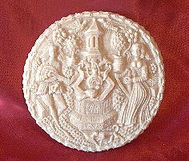

|
October 16th, 2004 Gode Cookery in Alabama, 2004: Assisted by Marleyna Smith & John Iaria
Le .j. cours
Payndemayne - white bread. Buttir - butter. Sallet - salad of various lettuces, herbs, & fruits. From Curye on Inglish and Sallets, Humbles, & Shrewsbery Cakes. We are
serving a combined
variation of two period receipts: Salat, from Curye on Inglish; and To
Compound an excellent
Sallet, from Sallets,
Humbles, & Shrewsbery
Cakes. Our recipe is found HERE. Ingredients:
lettuce, spinach, fresh herbs, onion,
scallion, red cabbage, cucumber, raisins, walnuts, oranges, lemons, red
wine vinegar, olive oil, sugar.
Broet
d'Alamaniz - "German
broth." A chicken & pork soup, made with almond milk & spices.
From Du fait de cuisine. German
broths were one of the most common dishes in late-medieval French &
English cookery, according to Terence Scully. The flavor of the broth
was a well-known combination of onions, pork fat, almonds, &
spices. Read Scully's translation of the period recipe HERE. Ingredients:
chicken meat, pork, onions, bacon fat, almonds, beef bouillon, white
wine, sour grape juice, ginger, cardamom, black pepper, nutmeg, cloves,
mace, saffron, sugar, salt.
Le .ij. cours
Garroites - carrots cooked in honey. From Le Menagier de Paris. We are preparing carrots according to the
instructions from Le Menagier de
Paris, which has them boiled
until tender, then cooked in honey.
Read Janet Hinson's translation of the original recipe HERE.
Ingredients: carrots, honey. Benes yfryed - Fava beans, onions, & garlic browned in olive oil & spices. From Forme of Cury. This is a simple dish of fried beans, onions, &
garlic.
Read our recipe HERE. Ingredients:
fava beans, onions, garlic, olive oil, cinnamon, sugar, cloves, nutmeg,
white pepper, salt.
Chike endored - roast chicken in a golden egg glaze. From Harleian MS 4016. Roast chicken is endored - that is, covered in gold
- with a glaze that imitates the gold-leaf so often found on medieval
food. The 15th c. recipe is read HERE.
Ingredients: chicken (roasted with olive oil, salt, & pepper), egg yolks, flour, ginger, white pepper, saffron. Entremet
- A Musical Interlude
Minnesanger wafer - Springerle wafer. Springerle is a type of molded
cake or wafer which originated in Northern Europe around the year 1000
A.D. The Minnesanger design used here, featuring two musicians at a
fountain, is dated to approx. 1540 and is from Nuremberg, Germany.
Ingredients: eggs,
flour, sugar, baker's ammonia, spices.

The Minnesanger wafer Le .iij. cours Champignons - mushrooms & cheese. From Le Menagier de Paris. Le Menagier de Paris, a wealthy
man of 14th c. France, recommnded this mushroom dish to his new bride.
His recipe may be found HERE.
Ingredients: mushrooms, olive oil, grated romano & parmesan cheese, salt, pepper. Beuf Comme Venoison d'Ours - "Beef to taste like bear." Roast beef accompanied with a black pepper sauce. From Le Menagier de Paris. This is roast beef, served with a black pepper sauce
designed to make the final product taste like wild bear. From Le Menagier de Paris, the original
recipe with translation may be read HERE. Ingredients:
beef, salt, pepper, bread crumbs, red
wine vinegar, beef bouillon, ginger, cloves, cardamom.
Amplummus - fried apples in cream, eggs, cinnamon, & sugar. From Un Vivendier. The name amplummus is probably German and is
a combination of the words for "apple" and "mush;" the recipe possibly
originated as a dish for the ill. The original recipe is HERE. Ingredients: apples, butter, cream,
egg yolks, saffron, salt, cinnamon, sugar.
Le .iiij. cours Gauffres
- cakes
and wafers; the presentation of the Bean Cake. Broet
d'Alamaniz
Next, a German Broth: to instruct the person who is to make it, depending on the quantity he is to make of it let him take his capons, prepare them cleanly and cut them into quarters; then according to the quantity of that pottage he has been charged to make, he should take the meat in an amount proportionate to the poultry, just as in the other pottage, either pork, lamb, kid, or veal, and this meat should be cut up to the size of the quartered poultry. And for this take a quantity of onions according to the amount of meat you will be making, and cut them up very small; and take the fat of bacon and melt it fully, and put the amount of meat you have in either good, clean cauldrons or boilers, and then put your onions and the fat around your meat and fry all of it together. Depending on the amount of your meat, get a quantity of almonds, and clean them so that there are no bits of shell left, and wash them in good water; then have them ground without peeling the skin off them, and moisten them with beef bouillon; then take a good two-handled pot and with beef bouillon, strain the amount that you want to make of it; and check that it is not too salty. Then take good white wine and verjuice in an amount suitable for the quantity of the broth and add them together with white ginger, grains of paradise, pepper - and not too much of it , with nutmegs, and all the lesser spices like cloves and mace, and some saffron to give it color; and use all these spices judiciously. Once they have been ground, put them into your broth, and pour this broth over your fried meat, together with a large amount of sugar appropriate for the quantity of the broth. When everything is together, taste it to see whether there is too much or too little of anything so that you can correct this, and taste it too for saltiness. And be careful about the meat that it does not cook too much, because kid and veal are more tender than poultry. When your meat is cooked just right and it is time to serve it up, put it to one side and set it out in dishes, and then pour the broth over top of it. Scully, Terence. Chiquart's "On Cookery." A Fifteenth-century Savoyard Culinary Treatise. New York: Peter Lang Publishing, Inc., 1986. Garroites
Item, on All Saints, take carrots as many as you wish, and when they are well cleaned and chopped in pieces, cook them like the turnips. (Carrots are red roots which are sold at the Halles in baskets, and each basket costs one blanc.) Hinson,
Janet, trans. Le
Menagier de Paris <http://www.daviddfriedman.com/Medieval/Cookbooks/Menagier/Menagier_Contents.html>
(May 4, 2004)
Champignons
Champignons
d'une nuit sont les meilleurs, et sont petits et vermeils dedans, clos
dessus: et les convient peler, puis laver en eaue chaude et pourboulir;
qui en veult mettre en pasté, si y mette de l'uille, du frommage
et de la pouldre.
Item, mettez-les entre deux plats sur charbons, et mettez un petit de sel, du frommage et de la pouldre. L'en les treuve en la fin de May et en Juin. Mushrooms of one night are the best, and are small and red inside, closed above: and they should be peeled, then wash in hot water and parboil; if you wish to put them in pastry, add oil, cheese and powdered spices. Item, put them between two dishes over the coals, and add a little salt, cheese and powdered spices. You can find them at the end of May and in June. Hinson,
Janet, trans. Le
Menagier de Paris <http://www.daviddfriedman.com/Medieval/Cookbooks/Menagier/Menagier_Contents.html>
(May 4, 2004)
Beuf Comme Venoison d'Ours Beuf Comme Venoison
d'Ours. Du giste de boeuf. Fait-l'en sausse noire
de gingembre, clo de giroffle, poivre long, graine, etc. Et met-l'en en
chascune escuelle, deux escuelles, et le mengue-l'en à saveur
d'ours.
Beef like Bear
Venison. A leg of beef. Do it in a black sauce of
ginger, clove, long and grain pepper, etc. And put in each bowl, two
pieces, and it will taste like bear.
Hinson,
Janet, trans. Le Menagier de Paris
<http://www.daviddfriedman.com/Medieval/Cookbooks/Menagier/Menagier_Contents.html> (May 4, 2004) Amplummus
Pour
faire un amplummus: prenez pommes pelleez et copez morceauix, puis mis
boullir en belle esve fresce; et quant il sont bien cuis, purez l'esve
hors nettement, puis les suffrisiez en beau bure fres; ayez cresme
douce et moyeuix d'oels bien batus, saffren et sel egalment; et au
dreschier canelle et chucquere largement pardessus.
To
make an Apple Sauce. Get peeled apples, cut into pieces, then set to
boil in pure fresh water. When they are thoroughly cooked, drain off
all of the water and sauté them in good fresh butter; get fresh
cream and well beaten egg yolks and saffron, and salt judiciously. On
dishing it up, cinnamon and sugar generously over the top.
Scully,
Terence. The
Vivendier. Devon: Prospect Books, 1997.
© 2004 Gode
Cookery
http://www.godecookery.com
|

BACK TO: Alabama Renaissance Faire
A Boke of Gode Cookery Alabama
Renaissance Faire
Alabama
Renaissance Faire
© James L. Matterer
Please visit: The Gode Cookery Bookshop